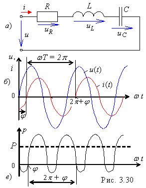

|
При гармоническом напряжении
приложенном к
зажимам RLC-цепи
(рис. 3.30, а),
и установившемся в ней токе
|  |
(при  ,
рис. 3.30, б),
мгновенная скорость поступления энергии W в
рассматриваемую цепь, т. е. мгновенная мощность ,
рис. 3.30, б),
мгновенная скорость поступления энергии W в
рассматриваемую цепь, т. е. мгновенная мощность
p(t)
= dW/dt = u(t)·i(t)
= (uR + uL + uС)i =
=
После подстановки тока
и напряжения
u =
получим выражение мгновенной мощности
график которой приведен на рис. 3.30, в. |
Проведём анализ каждой составляющей мощности
р(t)
цепи.
|